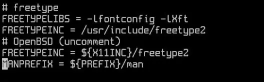
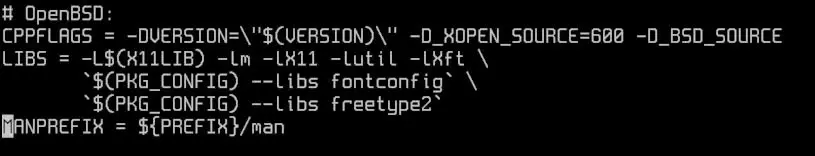
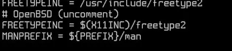
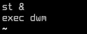

Download OpenBSD and follow the installation instructions. The installation of OpenBSD is straightforward.
After installation, log in as root to configure user permissions.
pkg_add vim
doas config file:
vim /etc/doas.conf
Sample doas config:
permit nopass sh as root
sh is the user, and nopass means no password prompt is needed for doas commands.
Exit and log in as your user, then install git:
doas pkg_add git
Create directories to hold dwm, st, and dmenu:
mkdir suckless cd suckless/ git clone --depth=1 https://git.suckless.org/dwm git clone --depth=1 https://git.suckless.org/st git clone --depth=1 https://git.suckless.org/dmenu
Uncomment the necessary lines in the config.mk file for each software:
cd dwm/ vim config.mk
make doas make install
cd st/ vim config.mk
make doas make install
cd dmenu/ vim config.mk
make doas make install
Create an .xsession file to use xenodm to launch dwm:
vim .xsession
exec dwm
Enable xenodm and reboot:
doas rcctl enable xenodm doas shutdown -r now
After reboot, you should see the xenodm login screen. Log in with your user and password, and dwm should start.
Note: To disable the xconsole, edit the following file and comment the line that has xconsole:
doas vim /etc/X11/xenodm/Xsetup_0
Reboot and the xconsole should be gone:
doas shutdown -r now
***Et voilà!***